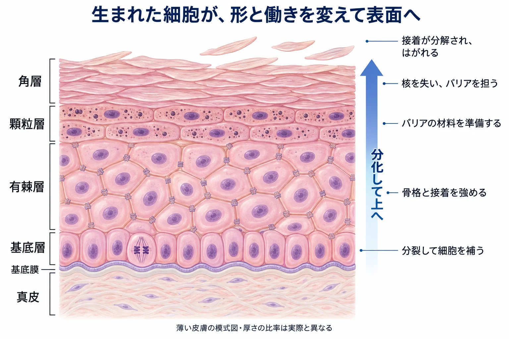
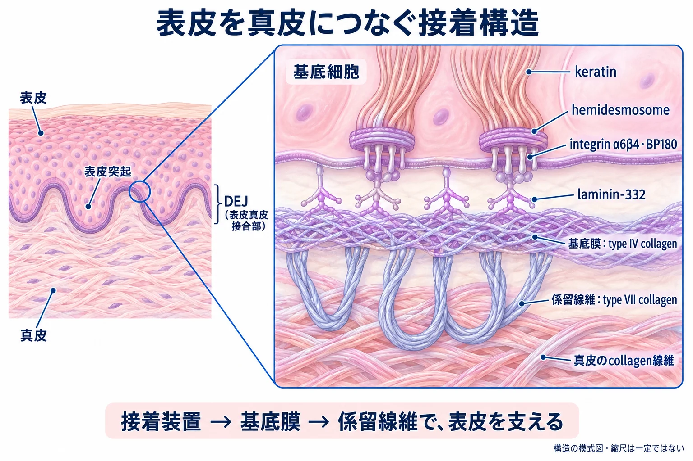
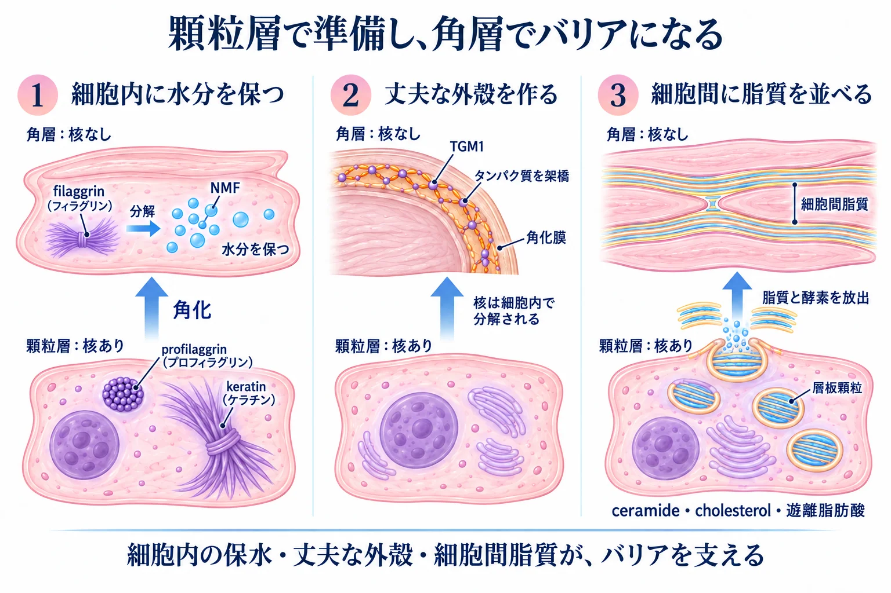
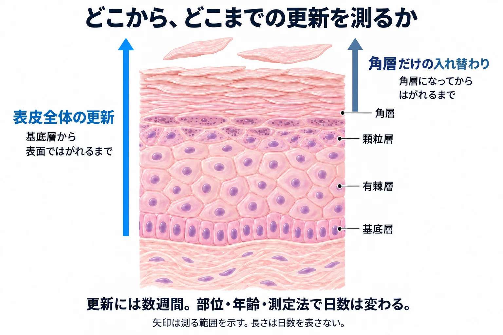

美容皮膚科 ／ 組織の生化学
表皮とターンオーバー角化とDEJ
公開 2026-09-14
皮膚は、外側の表皮と、その下で皮膚を支える真皮からなります。表皮の最も外側にある角層は、体内から水分が蒸発するのを抑え、外から異物や刺激物が入り込むのを防いでいます。
脊椎動物が水中から陸上へ生活の場を広げる過程では、体の水分を空気中へ失わない仕組みが重要でした。表皮の角化とバリアの発達は、陸上生活を支えた適応の一つです。Strasserら, 2014
このバリアを担う細胞がどのように並び、真皮とどうつながっているのか。まず表皮の構造を見ます。
この章の一言
表皮は、細胞をバリアへと作り替え、入れ替えながら体の水分を守っています。
1 表皮を作る細胞と、四つの層
表皮の主な細胞は keratinocyte（角化細胞） です。細胞どうしが接着し、層をなして並んでいます。真皮に近い側から、基底層・有棘層・顆粒層・角層の四つに分かれます。
| 層 | 主な働き |
|---|---|
| 基底層 | 分裂して、新しい細胞を補う |
| 有棘層 | 細胞の骨格と、細胞どうしの接着を強める |
| 顆粒層 | 角層に必要なタンパク質と脂質を準備する |
| 角層 | 核を失った細胞と細胞間脂質が、バリアを担う |

詳しく：四つの層の分子と接着構造
角化細胞は、層を上がるにつれて細胞骨格や接着構造を変えます。まず、それぞれの層で使われる分子を整理します。
| 層 | 細胞の働き | 関わる分子・構造 |
|---|---|---|
| 基底層 | 新しい細胞を補充し、基底膜に接着する。増殖は主にこの層で起こる | 細胞骨格の keratin K5/K14、基底膜への接着を担う integrin α6β4 |
| 有棘層 | 細胞骨格と細胞間の接着を強め、力に耐える構造を作る | keratin K1/K10、細胞どうしをつなぐ desmosome |
| 顆粒層 | 角層の強度・保水・バリアに必要な成分を準備する | タンパク質を含む keratohyalin 顆粒、脂質や酵素を運ぶ lamellar body（層板顆粒） |
| 角層 | 水分の蒸散と外からの物質の侵入を抑える | 核を失った 角層細胞と、その間を満たす細胞間脂質 |
顆粒層の細胞どうしをつなぐ tight junction（タイトジャンクション） も、細胞間を物質が通り抜けるのを制限します。その構成タンパク質には claudin-1・occludin があります。Furuseら, 2002
2 DEJ ―― 表皮を真皮につなぐ
DEJ（dermal–epidermal junction、表皮真皮接合部） は、表皮と真皮をつなぐ領域です。基底細胞の接着装置、基底膜、真皮へ伸びる線維が一緒に働き、表皮を支えます。表皮には血管がなく、栄養は真皮の毛細血管から拡散して届きます。
基底細胞の接着装置が基底膜をつかみ、基底膜から伸びる係留線維が真皮につなぎます。
表皮が真皮側へ入り込む rete ridge（表皮突起） は、接触面積を広げ、ずれる力に抵抗する構造です。加齢に伴ってこの凹凸は平坦化し、表皮と真皮の接合が弱くなります。
色素との関係は メラノサイトと色素形成 で扱います。

詳しく：DEJをつなぐ分子
細胞から基底膜、基底膜から真皮へと、接着を担う分子が連なっています。
| 要素 | 何でできているか | 役割 |
|---|---|---|
| hemidesmosome | integrin α6β4、BP180（type XVII collagen）、BP230、plectin | 基底細胞を基底膜へ固定する |
| lamina lucida / densa | laminin-332、type IV collagen | 基底膜の網目構造を作り、細胞を支える |
| anchoring fibril | type VII collagen | 基底膜を乳頭真皮につなぐ |
3 細胞が生まれ、角層になってはがれる
基底膜という足場に接する基底層には、幹細胞と、その子孫である増殖を担う細胞がいます。これらは核を持ち、分裂して新しい細胞を補います。生まれた細胞の一部は基底層に残り、一部は分化して上の層へ移動します。基底層に残っている間に、脱核するわけではありません。
基底層から上へ進む細胞は、バリアの材料を準備して角層になり、最後にはがれ落ちます。細胞の補充から落屑までを含む、この一連の更新がターンオーバーです。
上の層へ進む角化細胞は、バリアに必要なタンパク質や脂質を作りながら、しだいに平たくなります。このように、角層細胞になるために形と働きを変えて成熟していく過程が、角化細胞の 分化 です。
有棘層・顆粒層ではまだ核を持っていますが、角層になるときに、核が細胞内で分解されて失われます（脱核）。 核をそのまま外へ押し出すわけではありません。細胞内小器官も失われ、バリアを担う corneocyte（角層細胞） へと変わるこの最終段階を 角化（cornification） と呼びます（→ 細胞死）。
核を失っても、すぐにはがれるわけではありません。 角層細胞は積み重なって表面を守ります。新しいタンパク質の合成は行いませんが、用意しておいた材料と酵素によって、保水成分の形成や接着の分解が続きます。
この分化を支える信号の一つが Ca²⁺（カルシウムイオン） です。表皮内のカルシウムは、基底層側で少なく、顆粒層付近で多くなり、角層では再び少なくなります。角化細胞はCa²⁺を感知し、接着や作るタンパク質を変えていきます。Eliasら, 2002、Tuら, 2012
詳しく：分化を調節するCa²⁺・ビタミンD・レチノイド
Ca²⁺とビタミンDは、角層になるための材料作りを支えます。
本文で見たカルシウムの勾配は、組織内の分布です。血液中の濃度や、細胞内の遊離Ca²⁺濃度とは区別します。角化細胞は CaSR（calcium-sensing receptor） などを介して細胞外のCa²⁺を感知し、細胞内シグナルや接着、分化に必要な遺伝子の発現を変えます。CaSRを欠損させたマウスの角化細胞では、分化とバリア機能に障害が見られます。Eliasら, 2002、Tuら, 2012
活性型ビタミンD〔1,25(OH)₂D₃〕 は、核内受容体 VDR を介して遺伝子発現を調節します。ヒト角化細胞の培養では、VDRの発現を抑えると分化が妨げられ、特定の glucosylceramide の産生や 層板顆粒（lamellar body） の形成も低下します。VDRは、角層の脂質と、それを運ぶ仕組みの準備にも関わっています。Hawkerら, 2007、Odaら, 2009
活性型ビタミンD₃外用薬が乾癬に使われる背景にも、過剰な増殖を抑え、分化を調節する作用があります。ただし、上の脂質産生の実験だけで治療効果全体を説明できるわけではありません。マキサカルシトール添付文書
ビタミンA系も分化に関わりますが、Dと同じ作用ではありません。
ヒト角化細胞の培養研究では、次の違いが見られます。
| 活性体 | 角化細胞に見られる作用 |
|---|---|
| 活性型ビタミンD | 増殖を抑え、角層へ向かう分化を進める |
| レチノイン酸（ビタミンA系） | 増殖・分化の進み方を変え、角化に関わるタンパク質や脂質合成関連遺伝子の発現を抑えることもある |
これは特定の培養条件での比較で、「Dは分化、Aは増殖」という固定的な分担ではありません。 Gibbsら, 1996、Leeら, 2009
VDRと、レチノイン酸の受容体 RAR は、どちらも RXR と組んで遺伝子発現を調節します。RXRを共有していても、組む相手が異なるため、同じ指示が出るわけではありません。受容体の詳しい比較は レチノイド外用の生化学 で扱います。Yuら, 1991
レチノイドの反応は、薬の種類と、受け取る細胞によって変わります。
細胞ごとに、薬を活性のある形に変えたり分解したりする働きや、反応する遺伝子が違います。濃度や作用時間も、増殖・分化・細胞死への影響を左右します。Tsukadaら, 2000、Nelsonら, 2011
例えば、角化細胞の培養ではレチノイン酸が増殖する性質を保つ場合があります。一方、培養した皮脂腺細胞では、イソトレチノインが増殖を抑え、アポトーシス（制御された細胞死）を起こします。この比較では、細胞も薬も異なります。「ビタミンAの作用」と一括りにせず、どの薬がどの細胞に働くかを見ます。Gibbsら, 1996、Nelsonら, 2006
4 角層は、三つのしくみで水分を守る
角層では、細胞内で水分を保つ・細胞を丈夫にする・細胞間から水分を逃がしにくくするという働きが組み合わさっています。

細胞の中で水分を保つ ―― NMF
filaggrin は、細胞の骨格となるkeratinを束ねるタンパク質です。角層になるとさらに分解され、アミノ酸などの保水成分になります。これらは NMF（天然保湿因子） の一部として、主に角層細胞の内側で水分を保ちます。Hosteら, 2011
核を失う前に材料を用意し、角層になってから加工して使う、という流れです。
詳しく：filaggrinからNMFができるまで
顆粒層の keratohyalin 顆粒には profilaggrin が蓄えられています。これが切断されて filaggrin となり、keratin filament を束ねて、角層細胞の形成を助けます。
角層では filaggrin がさらに分解され、アミノ酸やその誘導体である PCA・urocanic acid などになります。これらは NMF（natural moisturizing factor、天然保湿因子） の一部として、主に角層細胞の内側で水分を保ちます。NMFは核が分解されてできるものではなく、脱核前に用意したfilaggrinなどの成分を加工して作られます。
この加工には caspase-14 などの酵素が関わります。caspase-14欠損マウスではfilaggrinの分解が途中で滞り、PCAやurocanic acidが減ることが示されています。Hosteら, 2011
細胞を丈夫にする ―― 角化膜
細胞の周囲では、タンパク質どうしをつなぎ合わせて、丈夫な外殻を作ります。これが 角化膜（cornified envelope） です。図中央の TGM1 は、この結合を作る酵素です。
詳しく：角化膜を作るTGM1とタンパク質
transglutaminase 1（TGM1） は、involucrin・loricrin などのタンパク質を共有結合でつなぐ酵素です。細胞膜の内側に cornified envelope（角化膜） という丈夫な外殻を作ります。その外側には ω-hydroxyceramide などの脂質が結合します。
細胞の間を脂質で満たす ―― セラミドなど
顆粒層の細胞は、層板顆粒（lamellar body） という小さな袋から、脂質と酵素を細胞の外へ放出します。放出された脂質は加工され、角層細胞の間に層状に並びます。
主成分は ceramide（セラミド）・cholesterol・遊離脂肪酸 です。NMFが細胞内に水分を保ち、この細胞間脂質が水分の通り道を制限します（→ 角層バリアと経皮吸収）。
詳しく：層板顆粒とセラミドの加工
lamellar body（層板顆粒） は、顆粒層と角層の境界で脂質と酵素を細胞間へ放出します。glucosylceramide・sphingomyelin からは ceramide が、リン脂質からは遊離脂肪酸が作られます。これらが cholesterol とともに並び、層状の構造になります。
角層の脂質を加工する β-glucocerebrosidase や acid sphingomyelinase は、酸性環境で働く酵素です。それぞれglucosylceramide、sphingomyelinからceramideを作ります。材料を放出したあとに、適切なpHで加工することもバリア形成の一部です。
詳しく：角層を通る分子と500 Daルール
健常な角層を受動的に通過する分子を考えるとき、分子量が約500 Daを超えると通りにくいという経験則があります。これが 500ダルトンルール です。500 Daは0.5 kDaに相当します。
境界を一つ超えると急に通れなくなる法則でも、500 Da以下なら必ず届くという保証でもありません。親油性・電荷・製剤・バリアの状態も通過量を左右します。角層に留まることと、その下の細胞まで届くことの違いは 角層バリアと経皮吸収 で扱います。Bos・Meinardi, 2000
脂質を整えるには、pHも関わる
皮膚表面は酸性側で、角層の深部へ進むほど、平均的なpHは中性側に近づきます。 これが pH勾配 です。さらに細胞間には局所的な酸性領域もあり、各層が一様なpHで区切られているわけではありません。Öhman・Vahlquist, 1994、Hansonら, 2002
酸性環境は、セラミドを作る酵素が働く条件の一つです。また、細胞どうしの接着を分解する酵素の働きにも影響します。pHは、バリアを作ることと、角層をはがすことの両方に関わっています。Hachemら, 2003
詳しく：pH勾配と酵素の働く場所
皮膚表面から深部へ向かうpH勾配に加え、角層の細胞間には局所的な酸性領域があります。表面で測ったpHだけでは、酵素が働く場所の環境をすべて表せません。Öhman・Vahlquist, 1994、Hansonら, 2002
この酸性環境を作る仕組みには、リン脂質からの遊離脂肪酸の生成や、NHE1（Na⁺/H⁺交換輸送体） によるH⁺の輸送などがあります。Fluhrら, 2001、Fluhrら, 2004
一方、pHが上がると、角層細胞どうしの接着を分解するserine proteaseの活性が高まり、接着や脂質加工酵素が過剰に分解されることがあります。角層を中性側へ変えたマウスの実験では、脂質の加工障害と接着の低下、バリア回復の遅れが確認されています。弱酸性環境は、脂質を整えることと、角層を適切に保つことの両方に関わります。 Hachemら, 2003、Hachemら, 2005
5 接着が分解され、角層細胞がはがれる
角層細胞は、corneodesmosome という接着構造でつながっています。皮膚表面に近づくとこの接着が分解され、細胞がはがれ落ちます。これが 落屑 です。
接着を分解する酵素の働きは、pH・水分量・酵素を抑える仕組みによって調節されます。新しい角層が作られる量と、表面からはがれる量が釣り合うことで、角層の厚さが保たれます。
ターンオーバーを考えるときは、細胞が増える速さに加えて、十分に分化し、バリアを作ってからはがれているかを見ます。
詳しく：落屑を調節するKLKとLEKTI
pHによる調節に加えて、接着を分解する酵素と、その働きを抑える分子の関係も角層の維持を支えます。
| 分子 | 働き |
|---|---|
| KLK5・KLK7 | corneodesmosomeを分解するタンパク質分解酵素 |
| LEKTI | KLKなどの働きを抑え、接着が過剰に分解されるのを防ぐ。SPINK5遺伝子から作られる |
6 表皮の更新には、数週間かかる
ターンオーバーは「約28日」と説明されますが、日数は部位・年齢・測り方で変わります。ヒトの前腕では、表皮全体の更新を 約45日 と推定した研究もあります。Bergstresser・Taylor, 1977
また、角層だけが入れ替わる時間を調べた研究では、若年成人で約20日、高齢者ではそれより10日以上長くなっていました。Grove・Kligman, 1983
表皮の更新は数週間かけて進みますが、保水状態やバリア機能は、その途中でも変化します。治療後は、ざらつき・乾燥・赤み・色調など、評価する変化に合わせて経過を見ます。

7 表皮と真皮は、互いに働きかける
角化細胞と線維芽細胞は、サイトカインや増殖因子を介して互いの働きを調節しています。 この信号のやりとりが、表皮と真皮の クロストーク です。表皮の更新や傷の修復は、こうした細胞間の連携に支えられています。
例えば、角化細胞が出した信号を受けて、線維芽細胞が表皮の増殖を助ける因子を作ります。
| 信号の向き | 相手の細胞に起こること |
|---|---|
| 角化細胞 → 線維芽細胞 | 角化細胞からの IL-1 が、線維芽細胞に増殖因子を作らせる |
| 線維芽細胞 → 角化細胞 | 線維芽細胞からの KGF（FGF-7、角化細胞増殖因子） が、角化細胞の増殖を促す |
この往復は、ヒトの角化細胞と線維芽細胞を一緒に培養した研究で確かめられています。Maas-Szabowskiら, 1999
表皮からの信号は、真皮のコラーゲンの分解・再構築にも関わります。Ghaharyら, 2004
美容医療で表皮に刺激を加えたときも、表皮から出る信号を通じて真皮の反応が変わる可能性があります。治療を理解するには、刺激が届く深さに加えて、その細胞が周囲へ何を伝えるかも考えます。炎症と修復の経過は 炎症と創傷治癒、線維芽細胞の働きは 線維芽細胞とコラーゲン へつながります。
詳しく：表皮から真皮のECM代謝への信号
表皮の更新には、細胞の分化や落屑だけでなく、周囲の細胞との信号のやりとりも関わります。本文では真皮から表皮の増殖を助ける信号を見ましたが、逆方向に、表皮が真皮のECM代謝を変える作用も調べられています。
培養研究では、角化細胞の分泌物が線維芽細胞の MMP-1（コラーゲンを分解する酵素） を増やすことも示されています。表皮は、真皮のコラーゲンの分解・再構築にも関わっています。Ghaharyら, 2004
8 更新の釣り合いが崩れると、何が起こるのか
ターンオーバーの乱れは、単に「遅くなる」ことではありません。 細胞を補うこと、分化してバリアを作ること、適切にはがれることの、どこが乱れるかで皮膚の変化も異なります。
| 乱れる過程 | 起こりうる変化 |
|---|---|
| 細胞の補充・修復が追いつかない | 傷んだ表皮を覆い直す過程が遅れる |
| 十分なバリアを作れない | 水分が逃げやすく、刺激物も入りやすくなる。乾燥やヒリつき、炎症につながる |
| 角層が適切にはがれない | 角層が残って厚くなる、表面が不均一になってざらつくなどの変化が起こる |
| 作られる量より多く角層が失われる | バリアが弱まり、刺激を受けやすくなる |
乾燥や炎症は、逆に角層の酵素や接着の働きにも影響します。そのため、更新とバリアの乱れは互いに関わります。「皮がむける」「更新が速い」だけでは、正常に更新できているかは判断できません。
表皮の色素の問題も、ターンオーバーだけでは説明できません。 メラニンを作る量、角化細胞への受け渡し、細胞内での分布、色素が残る時間が関わります。表皮の更新はそのうちの一過程です。メラノサイトとの共同作業は メラノサイトと色素形成 で扱います。
治療を考えるときも、更新・バリア・色素形成のどの過程に働きかけるかを区別します。具体的な外用や施術は 角層バリアと経皮吸収・レチノイド外用の生化学・ケミカルピーリングの生化学・美白外用の生化学 で扱います。
この章の到達点
- 表皮は角化細胞が層を作り、DEJを介して真皮につながっている。 角層は表皮の最も外側で、水分の蒸散を抑える。
- 細胞は材料を準備し、核を失って角層になり、最後にはがれる。 この一連の更新がターンオーバー。
- NMFは主に細胞内で保水し、角化膜は細胞を丈夫にし、細胞間脂質は水分の通過を抑える。
- Ca²⁺は分化を支え、pHは脂質加工と落屑の調節に関わる。 バリアを作る過程と、はがす過程の釣り合いが必要。
- 表皮全体と角層だけの更新時間を区別する。 治療では作用する場所と過程を捉え、バリアが保たれているかも見る。
参考文献
- Öhman H, Vahlquist A. In vivo studies concerning a pH gradient in human stratum corneum and upper epidermis. Acta Derm Venereol. 1994. PMID: 7817676
- Hanson KM, et al. Two-photon fluorescence lifetime imaging of the skin stratum corneum pH gradient. Biophys J. 2002. PMID: 12202391
- Strasser B, et al. Evolutionary origin and diversification of epidermal barrier proteins in amniotes. Mol Biol Evol. 2014. PMID: 25169930
- Elias PM, et al. Origin of the epidermal calcium gradient: regulation by barrier status and role of active vs passive mechanisms. J Invest Dermatol. 2002. PMID: 12485427
- Tu CL, et al. Ablation of the calcium-sensing receptor in keratinocytes impairs epidermal differentiation and barrier function. J Invest Dermatol. 2012. PMID: 22622426
- Hawker NP, et al. Regulation of human epidermal keratinocyte differentiation by the vitamin D receptor and its coactivators DRIP205, SRC2, and SRC3. J Invest Dermatol. 2007. PMID: 17082781
- Oda Y, et al. Vitamin D receptor and coactivators SRC2 and 3 regulate epidermis-specific sphingolipid production and permeability barrier formation. J Invest Dermatol. 2009. PMID: 19052561
- Hoste E, et al. Caspase-14 is required for filaggrin degradation to natural moisturizing factors in the skin. J Invest Dermatol. 2011. PMID: 21654840
- Fluhr JW, et al. Generation of free fatty acids from phospholipids regulates stratum corneum acidification and integrity. J Invest Dermatol. 2001. PMID: 11442748
- Fluhr JW, et al. Stratum corneum acidification in neonatal skin: secretory phospholipase A2 and the sodium/hydrogen antiporter-1 acidify neonatal rat stratum corneum. J Invest Dermatol. 2004. PMID: 15009712
- Hachem JP, et al. pH directly regulates epidermal permeability barrier homeostasis, and stratum corneum integrity/cohesion. J Invest Dermatol. 2003. PMID: 12880427
- Hachem JP, et al. Sustained serine proteases activity by prolonged increase in pH leads to degradation of lipid processing enzymes and profound alterations of barrier function and stratum corneum integrity. J Invest Dermatol. 2005. PMID: 16117792
- Bergstresser PR, Taylor JR. Epidermal 'turnover time'—a new examination. Br J Dermatol. 1977. PMID: 871385
- Grove GL, Kligman AM. Age-associated changes in human epidermal cell renewal. J Gerontol. 1983. doi:10.1093/geronj/38.2.137
- Furuse M, et al. Claudin-based tight junctions are crucial for the mammalian epidermal barrier: a lesson from claudin-1-deficient mice. J Cell Biol. 2002. PMID: 11889141
- Weiss JS, et al. Topical tretinoin improves photoaged skin. A double-blind vehicle-controlled study. JAMA. 1988. PMID: 3336176
- Maas-Szabowski N, Shimotoyodome A, Fusenig NE. Keratinocyte growth regulation in fibroblast cocultures via a double paracrine mechanism. J Cell Sci. 1999. PMID: 10341204
- Ghahary A, et al. Keratinocyte-releasable stratifin functions as a potent collagenase-stimulating factor in fibroblasts. J Invest Dermatol. 2004. PMID: 15140222
- Li R, et al. Association Between Skin Acid Mantle, Natural Moisturizing Factors, and Antibacterial Activity Against S. aureus in the Stratum Corneum. Clin Cosmet Investig Dermatol. 2023. doi:10.2147/CCID.S409534
- Kilic A, et al. Skin acidification with a water-in-oil emulsion (pH 4) restores disrupted epidermal barrier and improves structure of lipid lamellae in the elderly. J Dermatol. 2019. doi:10.1111/1346-8138.14891
- Hawkins S, Dasgupta BR, Ananthapadmanabhan KP. Role of pH in skin cleansing. Int J Cosmet Sci. 2021. PMID: 34137035
- Lee DD, et al. Retinoid-responsive transcriptional changes in epidermal keratinocytes. J Cell Physiol. 2009. PMID: 19388012
- Gibbs S, Backendorf C, Ponec M. Regulation of keratinocyte proliferation and differentiation by all-trans-retinoic acid, 9-cis-retinoic acid and 1,25-dihydroxy vitamin D3. Arch Dermatol Res. 1996. PMID: 8950452
- Tsukada M, et al. 13-cis retinoic acid exerts its specific activity on human sebocytes through selective intracellular isomerization to all-trans retinoic acid and binding to retinoid acid receptors. J Invest Dermatol. 2000. PMID: 10951254
- Nelson AM, et al. 13-cis Retinoic acid induces apoptosis and cell cycle arrest in human SEB-1 sebocytes. J Invest Dermatol. 2006. PMID: 16575387
- Nelson AM, et al. TRAIL contributes to the apoptotic effect of 13-cis retinoic acid in human sebaceous gland cells. Br J Dermatol. 2011. PMID: 21564055
- Bos JD, Meinardi MMHM. The 500 Dalton rule for the skin penetration of chemical compounds and drugs. Exp Dermatol. 2000. PMID: 10839713